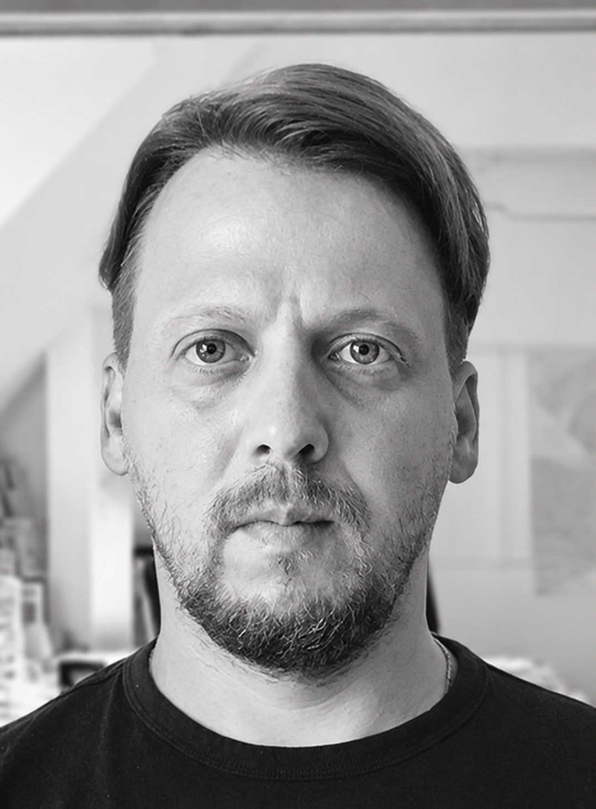

О бюро

DPA — архитектурная мастерская Дмитрия Потаралова, создающая современную, лаконичную и индивидуальную архитектуру, в которой важны человек, место и контекст.
Мы проектируем общественные и жилые здания, частную архитектуру и градостроительные концепции. Работаем с разными масштабами — от анализа участка и архитектурной концепции до рабочей документации и сопровождения строительства.
В основе нашего подхода — комфортная и устойчивая среда, внимательное отношение к природе и истории места, рациональные решения и современный BIM-процесс.
Дмитрий Потаралов
Окончил СПбГАСУ в 2007 году. Член Союза архитекторов Санкт-Петербурга с 2010 года.
Направления
Общественные здания
Жилые комплексы
Частная архитектура
Градостроительные концепции
Ландшафтная архитектура
Интерьеры
BIM